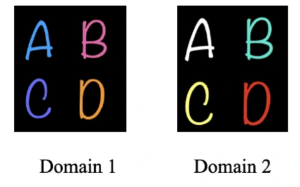
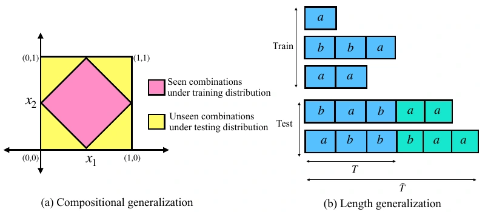
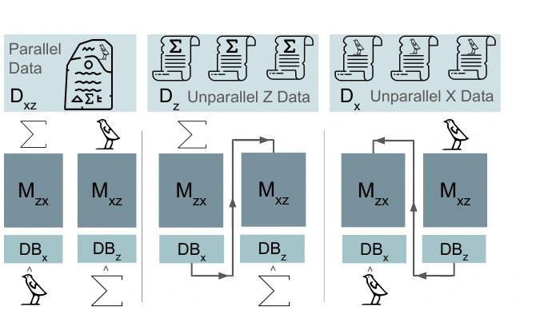
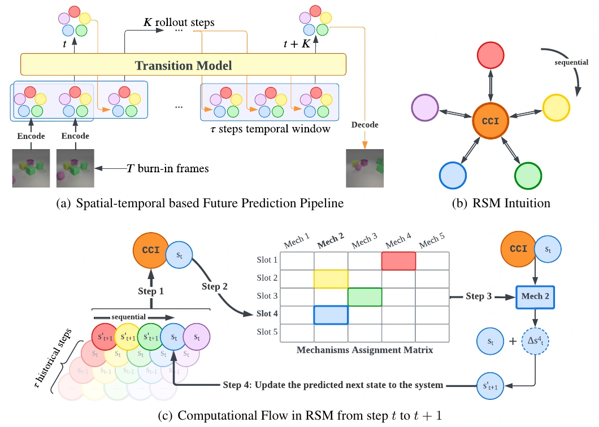

Beyond Accuracy: A Diagnostic Benchmark for Hypothesis-Driven Experiment Planning in LLM Agents
NeurIPS 2026 · Evaluations and Datasets
Diagnosing how agents update beliefs and design experiments, alongside whether they identify the right mechanism.
EPFL · Lausanne, Switzerland
I’m a PhD student in Computer Science at EPFL, advised by Caglar Gulcehre and Philippe Schwaller in the CLAIRE and LIAC labs.
I work on reasoning and alignment for scientific discovery: how models seek information, plan experiments, and reason over scientific data. Previously, I studied causal representations and length and compositional generalization.
Before EPFL, I completed my master’s at Mila and Université de Montréal, and my bachelor’s in Electrical Engineering at Sharif University of Technology.

Beyond Accuracy at NeurIPS 2026 · RxnHaystack at ML4Molecules More news ↗
Scientific reasoning, generalization, and causal representations. Click a figure to take a closer look.
NeurIPS 2026 · Evaluations and Datasets
Diagnosing how agents update beliefs and design experiments, alongside whether they identify the right mechanism.

ML4Molecules workshop, NeurIPS 2026
Separating corpus access, structured execution, and chemical reasoning in large reaction datasets.

AI4Science workshop, ICML 2026
Chain-of-Questions: studying how models identify information needs, obtain answers, and use what they learn.

COLM 2025
Learning from discovered programs to improve the language model’s evolutionary search.

ICLR 2024
Learning causal representations of multiple objects using object-centric structure and sparse perturbations.

AISTATS 2024
Recovering stable causal factors by exploiting what remains invariant across domains.

Preprint, 2024 · ICML 2024 workshop
Understanding when sequence models can generalize to new combinations and longer sequences.

Preprint, 2024 · ICML 2024 workshop
Learning mappings between symbolic sequences using scarce parallel data and abundant unpaired data.

NeurIPS 2023
Reusing mechanisms across object slots to predict the dynamics of interacting objects.
Master’s thesis · 2023
Mila · Université de Montréal · Dean’s Honor List
thesis ↗Beyond Accuracy accepted to NeurIPS 2026, Evaluations and Datasets. RxnHaystack accepted to the ML4Molecules workshop.
Asking the Right Question accepted to the AI4Science workshop at ICML 2026.
Gave an invited research talk at Chalmers University of Technology.
EvoTune accepted to COLM 2025!
Our work on length and compositional generalization and symbolic autoencoding appeared at ICML workshops.
Our object-centric CRL paper accepted to ICLR, and MD-CRL to AISTATS.
Completed my master’s thesis with the highest distinction. Later recognized on the Dean’s Honor List.
Reusable Slotwise Mechanisms accepted to NeurIPS 2023.
Joined the Mila Entrepreneurs cohort.
Research internship at EPFL’s dlab with Robert West, supported by Summer@EPFL.
Started my master’s at Mila and Université de Montréal.
Graduated from Sharif University of Technology.
Research internship at RIKEN AIP in Japan.
Started learning piano.
Research internship at the Institute of Neuroinformatics, ETH Zurich / University of Zurich.
Deputy Director of Sharif’s Electrical Engineering student association.
My research connects reasoning, search and planning, epistemic uncertainty, and AI for scientific discovery. Earlier, I worked on causal representation learning and length and compositional generalization.
Away from the desk
I play piano, hike and ski in the Swiss Alps, and sail on Lake Geneva.
I’m interested in research collaborations and industry opportunities on reasoning, alignment, and AI for science.
EPFL students are welcome to contact me about semester projects. For students elsewhere, projects should be feasible with the computing resources available to you; I’m unable to provide external access to our compute.
I welcome constructive feedback, professional or personal. You can share it through this feedback form ↗.